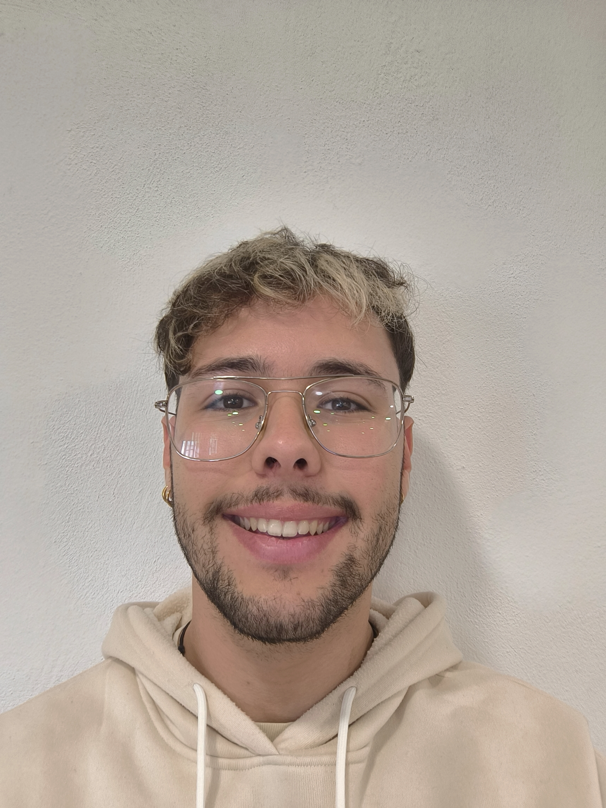

Sobre mí
Conoce más sobre mi trayectoria en el desarrollo web
Hola, soy Yoël Gómez Benítez
Estudiante de 2º de Desarrollo de Aplicaciones Web (DAW) apasionado por el desarrollo frontend y la creación de interfaces de usuario atractivas y funcionales.
Objetivos con este blog:
Documentar mi aprendizaje en la asignatura DIWEB, compartir conocimientos y crear un portfolio de mis proyectos.